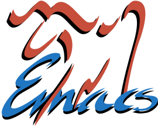

algunos dicen que es un editor, otros que es un sistema operativo, los mas filosoficos diran que es lo que elijas que sea, una forma de vida, un camino a seguir o incluso que Emacs son los padres… bueno luego de un par de años utilizando Emacs esta es mi opinion
My and mrs Emacs
Yo y la señora Emacs, tenemos algo que esta creciendo, sabemos que está mal, pero es algo muy fuerte como para dejarlo ir ahora.
Nos vemos cada dia en el mismo monitor, a las 8:30 se que estará ahí, tomando mis comandos, haciendo toda clase de funciones, mientras moc toca nuestra canción favorita.
Yo y la señora, señora Emacs, señora Emacs, señora Emacs, tenemos algo que esta creciendo, sabemos que esta mal, pero es algo muy fuerte como para dejarlo ir ahora.
Tenemos que ser muy cuidadosos, de no llevar nuestros sueños muy lejos, porque ella tiene sus propias obligaciones y yo también, yo y la señora, señora Emacs, señora Emacs, señora Emacs.
Bueno, es nuestra hora de irnos, me duele mucho, mucho por dentro, y ahora ella tomará su camino, yo el mio, Pero mañana nos veremos en el mismo lugar, a la misma hora. Yo y la señora Emacs, señora Emacs, señora Emacs…
…cof, cof, hem, todo aspirante a programador debe eligir su martillo forjador de codigo, en mi caso al ser autodidacta unicamente las opiniones de internet sirvieron de guia (lagrimas ironicas).
Primero vino la bestia (VI), fue dificil, muy dificil (mas sin saber mecanografia). Hubo que anotar las combinaciones frecuentes en un papel y pegar los ojos al teclado y luego al monitor y luego al teclado. Dia tras dia mejoraba mi Kung Fu y la idea de ser un programador parecia no ser solo un sueño. Tras un mes de entrenamiento y con algo de confianza probe un enfoque mas visual (gedit), el resultado? Un sin sabor, era sencillo pero no tenia profundidad, carecia de potencia, en resumen aburrido, de regreso al viejo dojo encontre una nueva escuela (Emacs), las clases eran gratis y prometian ser interesantes
Tras una semana con el tutorial, era tan agil con Emacs como con Vi, nada mal,
se podia hacer todo con el teclado y si lo queria tambien tenia menus accesibles
tanto por las Fs como por el raton (esto ultimo es increible, todo aquel que
asimila la forma Emacs inevitablemente termina por hacer a un lado el
raton. ¿Quien demonios sigue programando esto?).
Tras unos dias (y con ayuda de algun tutorial) puede cambiar el tema, luego descubri que se podia navegar por los ficheros desde emacs y que tenia terminales e interpretes y un tetris y un navegador web y gestor de paquetes y soporte para cualquier lenguaje de programacion (almenos resaltado) y un sin fin de utiles(?) aplicaciones, sin embargo todas compartian el mismo conjunto de comandos base para moverse por la interfaz y manipular texto, aprender lo especifico de cada funcionalidad (en gerga de emacs, modo) es un tema aparte que requiere una memoria exepcional
Cai como un yonqui adicto a cualquier informacion de emacs (los no hablantes de ingles tenemos un poco mas dicil… todo), apenas aprendi algun nuevo comando lo ponia en practica (para olvidarlo un par de horas despues)
Y un buen dia entientes que puedes programar emacs, que todo comportamiento es modificable y de echo es modificable al vuelo y te preguntas ¿Que es Emacs?
Emacs Es…
El interprete de un lenguaje derivado de Lisp (Emacs Lisp). De hecho es el interprete mas sofisticado que existe y probablemente existira, ya que viene con el suficiente codigo precargado como para (hacerte creer que es un editor y) permitirte crear nuevos programas, funcionalidades o modificar Emacs en si mismo… existe un mejor diseño que ese?
Enfoques sobre el texto
teco: un leguaje para forjar texto
vi: escribamos caracteres o apliquemos comandos a los caracteres
Emacs: el texto es la interfaz, el editor es parte de la interfaz, extendamos y modifiquemos a voluntad y sin restricciones nuestra interfaz
nano: un simple editor
vim: joder, lo que pueden hacer los de emacs, haremos a vi extensible
sublime: hare mi propio vim
atom: hagamos un editor como sublime pero con tecnologia web awesome!